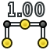

Draft Dimension/tr
|
|
| Menü konumu |
|---|
| Taslak → Boyut |
| Tezgahlar |
| Taslak, Mimari |
| Varsayılan kısayol |
| D I |
| Versiyonda tanıtıldı |
| 0.18 |
| Ayrıca bkz |
| FlipDimension,Teknik resim |
Description
Açıklama
Boyut aracı, iki nokta arasındaki mesafeyi ölçen ve görüntüleyen bir nesne oluşturur; üçüncü bir nokta, boyut çizgisinin konumunu belirtir.
Araç, doğrudan katı gövdelere tutturulmuş kenarları veya çizgileri ölçebilir; Gövde değişirse, boyut kendini günceller. Araç ayrıca Yay veya Doldur, Eskiz Dolgu oluştur ve Prça tasarım Dolgu işlemleri ile üretilenler gibi eğrilik çapını veya yarıçapını da ölçebilir.
Ortaya çıkan boyut 3D görünümüne yerleştirilir ve bir Taslak nesnesi olarak kabul edilir. Bu nesne, Teknik resim Yeni Eskiz veya Teknik resim Yeni Yay araçlarını kullanarak Teknik resim tezgahı sayfasında görüntülenebilir. Bu araçlar teknik çizimler hazırlamak içindir, bu yüzden boyutları 3D çizimde değil, sadece çizim sayfasında oluştururlar.

Üç nokta tarafından tanımlanan boyut
Usage
See also: Draft Tray, Draft Snap and Draft Constrain.
Linear dimension
Nasıl kullanılır
-

Taslak Boyut düğmesine basın veya D ardından I tuşları. - 3D görünümünde bir noktaya tıklayın veya bir koordinat yazın ve
 Nokta ekle düğmesine basın.
Nokta ekle düğmesine basın. - 3D görünümünde ikinci bir noktaya tıklayın veya bir koordinat yazın ve Nokta ekle düğmesine basın. İlk iki nokta ölçülen mesafeyi tanımlar.
- 3D görünümünde üçte birini tıklayın veya bir koordinat yazın ve düğmesine basın. Son nokta, ölçüm çizgisinin konumunu tanımlar.
{kind=link}
Radial dimension
- Optionally select a circular edge in the 3D View.
- Invoke the command as explained above.
- The Dimension task panel opens. See Options for more information.
- If you have not yet selected an edge do one of the following:
- To position the dimension line do one of the following:
Angular dimension
- Invoke the command as explained above.
- The Dimension task panel opens. See Options for more information.
- Do one of the following:
- To position the dimension arc pick a point in the 3D View.
- The displayed angle depends on the edges and the picked point.
Options
The single character keyboard shortcuts available in the task panel can be changed. See Draft Preferences. The shortcuts mentioned here are the default shortcuts.
Seçenekler
- Verilen eksendeki bir sonraki noktayı sınırlamak için bir noktadan sonra X, Y veya Z tuşlarına basın.
- Koordinatları manuel olarak girmek için sayıları girin, ardından her bir X, Y ve Z bileşeni arasında Enter tuşuna basın. Noktayı yerleştirmek istediğiniz değerleri aldığınızda Nokta ekle düğmesine basabilirsiniz.
- Göreceli moduna geçmek için R tuşuna basın veya onay kutusunu tıklayın. Göreceli mod açıksa, bir sonraki noktanın koordinatları bir öncekine göredir; değilse, kesindir, Eksenden alınır (0,0,0).
- Devam moduna geçmek için T tuşuna basın veya onay kutusunu tıklayın. Devam modu açıksa, son noktayı verdikten sonra Boyut aracı yeniden başlatılır ve araç düğmesine tekrar basmadan başka bir boyut çizmenize izin verilir; Aşağıdaki boyutlar önceki boyutun son noktasından başlayacak ve aynı temel çizgiyi paylaşacaktır.
- Yakalama noktanızı mesafeden bağımsız olarak, en yakın çeki konumuna yönlendirmek için çizim yaparken Ctrl tuşunu basılı tutun.
- Bir önceki noktaya göre Kısıtlama bir sonraki noktanızı yatay veya dikey olarak çizerken ve çap ve yarıçap modları arasında geçiş yapmak için Shift tuşunu basılı tutun.
- Geçerli komutu iptal etmek için Esc veya Close düğmesine basın ve devam boyutlarını bitirin; önceden yerleştirilmiş boyutlar kalacaktır.
Notes
Boyut, ağaç görünümündeki öğeye çift tıklayarak veya  Taslak Düzenle düğmesine basarak düzenlenebilir. Ardından noktaları yeni bir konuma getirebilirsiniz.
Taslak Düzenle düğmesine basarak düzenlenebilir. Ardından noktaları yeni bir konuma getirebilirsiniz.
Preferences
- introduced in 1.1: When created, the text of dimensions is oriented automatically relative to the current working plane via their GörünümFlip Text property. A fine-tuning parameter is available to disable this behavior.
Özellikler
See also: Property View.
A Draft Dimension object is derived from an App FeaturePython object and inherits all its properties. The following properties are additional unless otherwise stated:
Data linear and radial dimension
Dimension
Veri
- Veri Start: ölçülecek mesafenin başlangıç noktasını belirtir.
- Veri End: ölçülecek mesafenin bitiş noktasını belirtir.
- Veri Dimline: boyut çizgisinin geçmesi gereken bir noktayı belirtir.
- Veri Distance: (salt okunur) ölçülen uzunluğu belirtir.
- Veri Diameter:
trueise, bir çap boyutu görüntüler; aksi takdirde bir yarıçap boyutu görüntüler; Bu özellik yalnızca boyut dairesel bir yaya bağlıysa çalışır.
Linear/radial dimension
- VeriDirection (
Vector): specifies the direction of the measurement. - VeriDistance (
Length): (read-only) specifies the value of the measurement. - VeriEnd (
VectorDistance): specifies the end point of the measurement. - VeriStart (
VectorDistance): specifies the start point of the measurement.
Radial dimension
- VeriDiameter (
Bool): specifies if a radial dimension is displayed as a diameter dimension. Not used for linear dimensions.
Data angular dimension
Angular dimension
- VeriAngle (
Angle): (read-only) specifies the value of the measurement. - VeriCenter (
VectorDistance): specifies the center of the measurement. - VeriFirst Angle (
Angle): specifies the start angle of the measurement. - VeriLast Angle (
Angle): specifies the end angle of the measurement.
Dimension
- VeriDimline (
VectorDistance): specifies the point through which the dimension arc passes. - Veri (hidden)Linked Geometry (
LinkSubList): not used. - Veri (hidden)Normal (
Vector): specifies the normal of the plane of the dimension. - Veri (hidden)Support (
Link): not used.
View
Annotation
- GörünümAnnotation Style (
Enumeration): specifies the annotation style applied to the dimension. See Draft AnnotationStyleEditor. - GörünümScale Multiplier (
Float): specifies the general scaling factor applied to the dimension.
Display Options
- GörünümDisplay Mode (
Enumeration): specifies how the text is displayed. If it isWorldthe text will be displayed on a plane defined by the VeriNormal of the measurement. If it isScreenthe text will always face the screen. This is an inherited property. The mentioned options are the renamed options (introduced in 0.21).
Graphics
Görünüm
- Görünüm Ext Lines: Ölçüm noktalarından boyut çizgisine giden uzatma hatlarının maksimum uzunluğunu belirtir.
- Görünüm Ext Overshoot: uzantı çizgilerinin boyut çizgisinin ötesindeki ek uzunluğunu belirtir.
- Görünüm Dim Overshoot: boyut çizgisine eklenen ilave uzunluğu belirtir.
* Görünüm Arrow Size: boyut çizgisinin sonunda görüntülenen sembolün boyutunu belirtir.
- Görünüm Arrow Type: "Çizgi", "Daire", "Ok" veya "Tik" olabilen, boyut çizgisinin sonunda görüntülenen sembolün türünü belirtir.
- Görünüm Flip Arrows: sembollerin boyut çizgisinin uçlarında çevrilip çevrilmeyeceğini belirtir; sadece bu semboller ok ise işe yarar.
- Görünüm Font Name: metni çizmek için kullanılacak fontu belirtir. "Arial" gibi bir font adı, "sans", "serif" veya "mono" gibi bir varsayılan stil, "Arial, Helvetica, sans" gibi bir aile veya "gibi bir stil içeren bir ad olabilir. Arial: "Kalın. Belirtilen font sistemde bulunmuyorsa, bunun yerine genel olan kullanılır.
- Görünüm Font Size: harflerin boyutunu belirtir. Boyut nesnesi ağaç görünümünde oluşturulmuşsa ancak metin görünmüyorsa, görünene kadar metnin boyutunu artırın.
- Görünüm Flip Text: ölçümü gösteren metnin yönünün çevrilip çevrilmeyeceğini belirtir.
- Görünüm Text Position: orijine (0,0,0) atıfta bulunulan metnin mutlak koordinatlardaki konumunu belirtir; metni boyut çizgisinin yanında görüntülemek için bu özelliği varsayılan değerinde (0,0,0) bırakın.
- Görünüm Text Spacing: Metin ve boyut çizgisi arasındaki boşluğu belirtir.
- Görünüm Override: gerçek ölçüm yerine görüntülenecek özel bir metin belirtir. Ölçüm değerini görüntülemek için metnin içindeki
$ dimdizesini kullanın. - Görünüm Decimals: ölçümde görüntülenecek ondalık basamak sayısını belirtir.
- Görünüm Show Unit:
trueise, birim ölçümün sayısal değerinin yanında görüntülenir. - Görünüm Unit Override: ölçümü "örneğin" km "," m "," cm "," mm "," mi "," ft "," in "olarak ifade edeceği bir birim belirtir. ; varsayılan birimleri kullanmak için bu özelliği boş bırakın. 0.17 sürümünde kullanılabilir
Text
- GörünümFlip Text (
Bool): specifies whether to flip the orientation of the text. - GörünümFont Name (
Font): specifies the font used to draw the text. It can be a font name, such asArial, a default style such assans,seriformono, a family such asArial,Helvetica,sans, or a name with a style such asArial:Bold. If the given font is not found on the system, a default font is used instead. - GörünümFont Size (
Length): specifies the size of the letters. The text can be invisible in the 3D View if this value is very small. - GörünümOverride (
String): specifies a custom text to display instead of the actual measurement. Use the string$diminside the text to include the measurement. - GörünümText Color (
Color): specifies the color of the text. introduced in 0.21 - GörünümText Position (
VectorDistance): specifies the position of the text in absolute coordinates.[0, 0, 0]will display the text in its default position near the dimension line or arc. - GörünümText Spacing (
Length): specifies the space between the text and the dimension line or arc.
Units
- GörünümDecimals (
Integer): specifies the number of decimal places to display for the measurement. - GörünümShow Unit (
Bool): specifies whether to display the unit next to the numerical value of the measurement. Not used for angular dimensions. - GörünümUnit Override (
String): specifies the unit in which to express the measurement, for example,km,m,cm,mm,mi,ft,inorarchfor arch units. Leave this blank to use the default unit. Not used for angular dimensions.
Scripting
Betik
Ayrıca bkz.: Taslak API ve FreeCAD Betik esasları.
dimension = make_dimension(p1, p2, p3=None, p4=None)
Kendisine iletilen argümanlara bağlı olarak, bu işlevi çağırmanın çeşitli yolları vardır:
dimension = make_dimension(p1, p2, p3=None)
dimension = make_dimension(object, i1, i2, p4=None)
dimension = make_dimension(object, i1, mode, p4=None)
p1vep2noktaları arasındaki mesafeyi ölçerek doğrusal birDimensionoluşturur.object'a bağlı,i1vei2endeksli köşeleri arasındaki mesafeyi ölçen doğrusal birDimensionoluşturur.object'a bağlı,i1, ölçülecek eğri kenarının dizini vemodeya { Boyut türünü belirtmek için {incode | "radius"}} veya"çap".- İlk aramada
p3ve diğer ikisinde dep4, boyut çizgisinin geçmesi gereken isteğe bağlı bir nokta belirtin. - Tüm noktalar
FreeCAD.Vectorile tanımlanır.
- İlk aramada
Açısal bir boyut oluşturmak için aşağıdaki işlevi kullanın:
dimension = make_angular_dimension(center, angles, p3, normal=None)
dimension = make_angular_dimension(center, [angle1, angle2], p3, normal=None)
- Verilen
centernoktasından, iki öğeliangleslistesinden ve arkasından gelenp3noktasından açısal birDimensionoluşturur. gitmelisin.- Eğer
angle1> angle2ise, görüntülenen açıangle1 - angle2farkıdır; Aksi halde, ek açı gösterilir360 - (angle2 - angle1). - Açıları radyan cinsinden verilmelidir;
math.radians ()işlevi, derece olarak verilen açıları dönüştürmek için kullanılabilir.
- Eğer
Dimension görünüm özellikleri niteliklerinin üzerine yazılarak değiştirilebilir; örneğin, ViewObject.FontSize üzerine, yeni boyutun milimetre cinsinden üzerine yazın.
Örnek:
import FreeCAD as App
import Draft
doc = App.newDocument()
p1 = App.Vector(0, 0, 0)
p2 = App.Vector(1000, 1000, 0)
p3 = App.Vector(-2500, 0, 0)
dimension1 = Draft.make_dimension(p1, p2, p3)
dimension1.ViewObject.FontSize = 200
polygon = Draft.make_polygon(3, radius=1000)
doc.recompute()
p4 = App.Vector(-2000, 1500, 0)
dimension2 = Draft.make_dimension(polygon, 1, 2, p4)
dimension2.ViewObject.FontSize = 200
center = App.Vector(2000, 0, 0)
p5 = App.Vector(3000, 1000, 0)
angle1 = 45
angle2 = 10
dimension3 = Draft.make_angular_dimension(center, [angle1, angle2], p5)
dimension3.ViewObject.FontSize = 200
dimension4 = Draft.make_angular_dimension(center, [angle2, angle1], p5*1.2)
dimension4.ViewObject.FontSize = 200
doc.recompute()
- Drafting: Line, Polyline, Fillet, Arc, Arc From 3 Points, Circle, Ellipse, Rectangle, Polygon, B-Spline, Cubic Bézier Curve, Bézier Curve, Point, Facebinder, ShapeString, Hatch
- Annotation: Text, Dimension, Label, Annotation Styles, Annotation Scale
- Modification: Move, Rotate, Scale, Mirror, Offset, Trimex, Stretch, Clone, Array, Polar Array, Circular Array, Path Array, Path Link Array, Point Array, Point Link Array, Edit, Highlight Subelements, Join, Split, Upgrade, Downgrade, Convert Wire/B-Spline, Draft to Sketch, Set Slope, Flip Dimension, Shape 2D View
- Draft Tray: Working Plane, Set Style, Toggle Construction Mode, AutoGroup
- Snapping: Snap Lock, Snap Endpoint, Snap Midpoint, Snap Center, Snap Angle, Snap Intersection, Snap Perpendicular, Snap Extension, Snap Parallel, Snap Special, Snap Near, Snap Ortho, Snap Grid, Snap Working Plane, Snap Dimensions, Toggle Grid
- Miscellaneous: Apply Current Style, New Layer, Manage Layers, New Named Group, SelectGroup, Add to Layer, Add to Group, Add to Construction Group, Toggle Wireframe, Working Plane Proxy, Heal, Show Snap Toolbar
- Additional: Constraining, Pattern, Preferences, Import Export Preferences, DXF/DWG, SVG, OCA, DAT
- Context menu:
- Most objects: Edit
- Layer container: Add New Layer, Reassign Properties of All Layers, Merge Layer Duplicates
- Layer: Activate Layer, Reassign Properties of Layer, Select Layer Contents
- Text and label: Open Links
- Wire: Flatten
- Working plane proxy: Save Camera Position, Save Visibility of Objects
- Getting started
- Installation: Download, Windows, Linux, Mac, Additional components, Docker, AppImage, Ubuntu Snap
- Basics: About FreeCAD, Interface, Mouse navigation, Selection methods, Object name, Preferences, Workbenches, Document structure, Properties, Help FreeCAD, Donate
- Help: Tutorials, Video tutorials
- Workbenches: Std Base, Assembly, BIM, CAM, Draft, FEM, Inspection, Material, Mesh, OpenSCAD, Part, PartDesign, Points, Reverse Engineering, Robot, Sketcher, Spreadsheet, Surface, TechDraw, Test Framework
- Hubs: User hub, Power users hub, Developer hub
- Drafting: Line, Polyline, Fillet, Arc, Arc From 3 Points, Circle, Ellipse, Rectangle, Polygon, B-Spline, Cubic Bézier Curve, Bézier Curve, Point, Facebinder, ShapeString, Hatch
- Annotation: Text, Dimension, Label, Annotation Styles, Annotation Scale
- Modification: Move, Rotate, Scale, Mirror, Offset, Trimex, Stretch, Clone, Array, Polar Array, Circular Array, Path Array, Path Link Array, Point Array, Point Link Array, Edit, Highlight Subelements, Join, Split, Upgrade, Downgrade, Convert Wire/B-Spline, Draft to Sketch, Set Slope, Flip Dimension, Shape 2D View
- Draft Tray: Working Plane, Set Style, Toggle Construction Mode, AutoGroup
- Snapping: Snap Lock, Snap Endpoint, Snap Midpoint, Snap Center, Snap Angle, Snap Intersection, Snap Perpendicular, Snap Extension, Snap Parallel, Snap Special, Snap Near, Snap Ortho, Snap Grid, Snap Working Plane, Snap Dimensions, Toggle Grid
- Miscellaneous: Apply Current Style, New Layer, Manage Layers, New Named Group, SelectGroup, Add to Layer, Add to Group, Add to Construction Group, Toggle Wireframe, Working Plane Proxy, Heal, Show Snap Toolbar
- Additional: Constraining, Pattern, Preferences, Import Export Preferences, DXF/DWG, SVG, OCA, DAT
- Context menu:
- Most objects: Edit
- Layer container: Add New Layer, Reassign Properties of All Layers, Merge Layer Duplicates
- Layer: Activate Layer, Reassign Properties of Layer, Select Layer Contents
- Text and label: Open Links
- Wire: Flatten
- Working plane proxy: Save Camera Position, Save Visibility of Objects
- Getting started
- Installation: Download, Windows, Linux, Mac, Additional components, Docker, AppImage, Ubuntu Snap
- Basics: About FreeCAD, Interface, Mouse navigation, Selection methods, Object name, Preferences, Workbenches, Document structure, Properties, Help FreeCAD, Donate
- Help: Tutorials, Video tutorials
- Workbenches: Std Base, Assembly, BIM, CAM, Draft, FEM, Inspection, Material, Mesh, OpenSCAD, Part, PartDesign, Points, Reverse Engineering, Robot, Sketcher, Spreadsheet, Surface, TechDraw, Test Framework
- Hubs: User hub, Power users hub, Developer hub